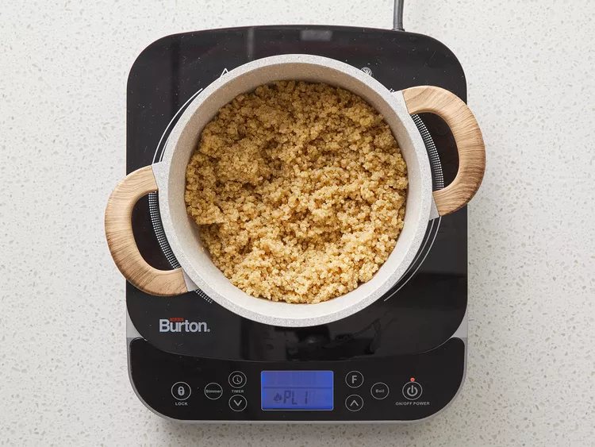
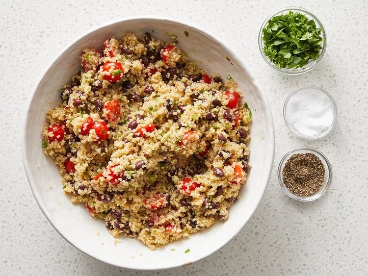

Bring water and quinoa to a boil in a saucepan. Reduce heat to medium-low, cover, and simmer until quinoa is tender and water has been absorbed, 10 to 15 minutes. Set aside to cool.
Meanwhile, whisk olive oil, lime juice, cumin, salt, and red pepper flakes together in a small bowl.

Combine quinoa, tomatoes, black beans, and green onions in a large bowl. Pour dressing over quinoa mixture; toss to coat. Stir in cilantro; season with salt and black pepper.
Serve immediately or chill in the refrigerator.